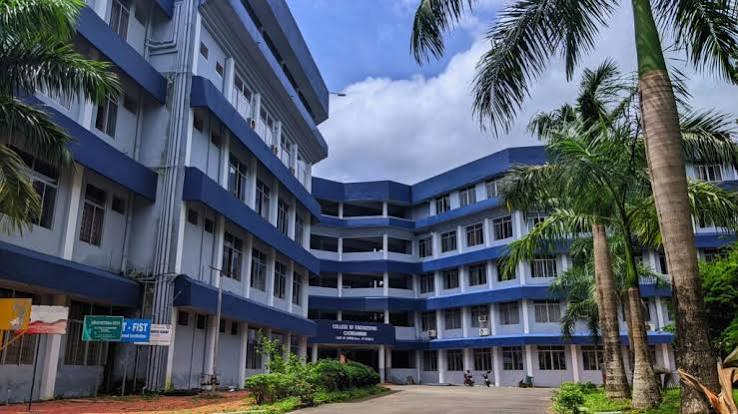

The College of Engineering Chengannur (CEC), was established by the Government of Kerala under the aegis of the IHRD, in the year 1993. It has been approved by All India Council for Technical Education (AICTE) and affiliated to APJ Abdul Kalam Technological University (KTU). Ever since its inception, the college has maintained its eminence as a leading engineering college in Kerala. Being located in Chengannur town, Alleppey district the college has got access to all means of transport, communication and lodging facilities.
The College of Engineering Chengannur (CEC) offers a total of 420 seats across its B.Tech programs, featuring 180 seats for Computer Science & Engineering, 120 seats for Electronics & Communication, and 60 seats each for Electrical & Electronics and AI & ML. Admission is split cleanly: 85% of seats are filled through the KEAM Centralized Allotment Process (divided into 50% state-merit and 35% management-merit based on entrance rank), while the remaining 15% are reserved for NRI applicants managed directly by the IHRD. For postgraduate entries, the 60 MCA seats and various M.Tech tracks are distributed based on state-level entrance exams and GATE scores respectively.
Courses Offered
| Courses | Specialisation | Seats |
|---|---|---|
| BTech | Computer Science and Engineering | 60 |
| Electronics & Communication Engineering | 60 | |
| Electrical & Electronics Engineering | 60 | |
| CSE (Artificial Intelligence & Machine Learning) | 60 | |
| MCA | Master of Computer Application | 60 |
College of Enginnering Chengannur
Chengannur,Alappuzha District
Kerala , India
PIN:689121
Phone no: 9845892322
Email : cec@gmail.com
Official Website Visit Official Website